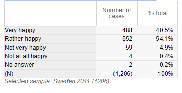
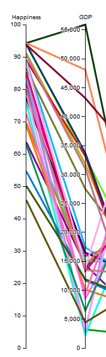
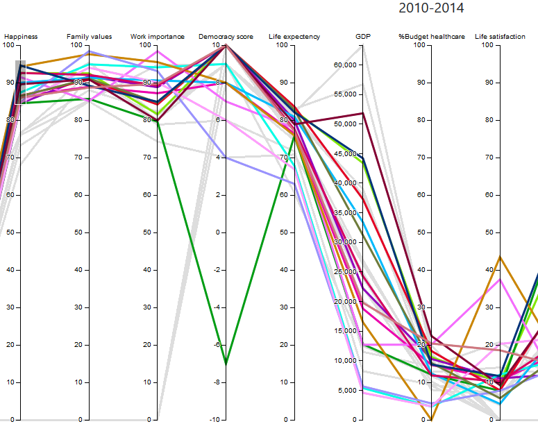

Research question & data acquisition
My main curiosity from the WVS data was happiness, and what factors contributed towards it. I selected 30 arbitrary countries(with some bias for familiarity) and picked attributes from the WVS database that I found relevant, but I thought it would be interesting to combine it with statistical data to look for correlations. So I choose to combine the WVS data with some attributes from Gapminder.org.
Data transformation & visual mapping
My choice for visualizing the data was either some form of scatterplot, parallel coordinates or to try to create some sort of interactive map. I liked the idea of being able to see all the attributes at once, and chose to implement it through a set of paralell coordinates. The way the survery was structured was a multiple choice, and thus I chose to force it into a binary type by classifiying the answer in a "Yes/No", manner.
Now since all the survey answers could be measured using a simple numbered scales, I could use that to compare data from gapminder.
Data timeline
Country statistics in percentage. Missing values from the WVS data were replaced by 0's. The parallel coordinates are interactive by brushing or moving the axes.
Mouseover for country name.
Gapminder data is always the last year available for of each wave.
Discovery processes 1
How has happiness evolved over time?
Happiness is one of those very subjective terms. I have a general belief that humanity as a whole has gone to great lengths to try make the average life better over time. Happiness should be unconditional, in my opinion, but what does the data say?

Results
Well, I for one am happy to see that the average happiness of the world seems to be increasing over time!
Discovery processes 2
Are there are factors that seems to have a strong correlation with happiness?
There are a lot of attributes that could contribute to whenever an individual consider themselves happy or not. Most of these could be hard to quanity on a larger scale, since they tend to be extremely subjective. But it is still interesting to take a look at the data provided from the WVS and Gapminder to see if there are any strong correlations. Something that stood out was the correlation between happiness and GDP.
There seem to be a general trend for increased happiness the higher the GDP is. Well except for Norway. But there might be an diminishing returns for buying happiness. Although are we not told that money cant buy happiness? Overall it can be quite hard distinguish factors outside of attributes such as the importance of family and work values.
>Results
There seem to be some general trends between certain attributes and the feelings of happiness within the world, such as GDP and family/work values. Also quite interesting to see the high happiness meter with a generally low life satisfaction across the board. Though I guess it is within our nature to want for more.
Learnings
This course is the first time I have actually gotten to do web programming. I have learned a lot about html, css and javascript, and how to utilize powerful libaries such as D3.js to convery information in a more intuitive way. I also got to try my hand at the task of visualizing a plethora of variables at once. Looking back at it, I think I missed the oppertunity of doing something with shapes, but I think I might actually follow this up with my own visualization project. There is still a lot of great data in the gapminder database... we will see what happens ^^.
Hosting done through GitHub Pages
Parallel Coordinate template that was used by: Jason Davies